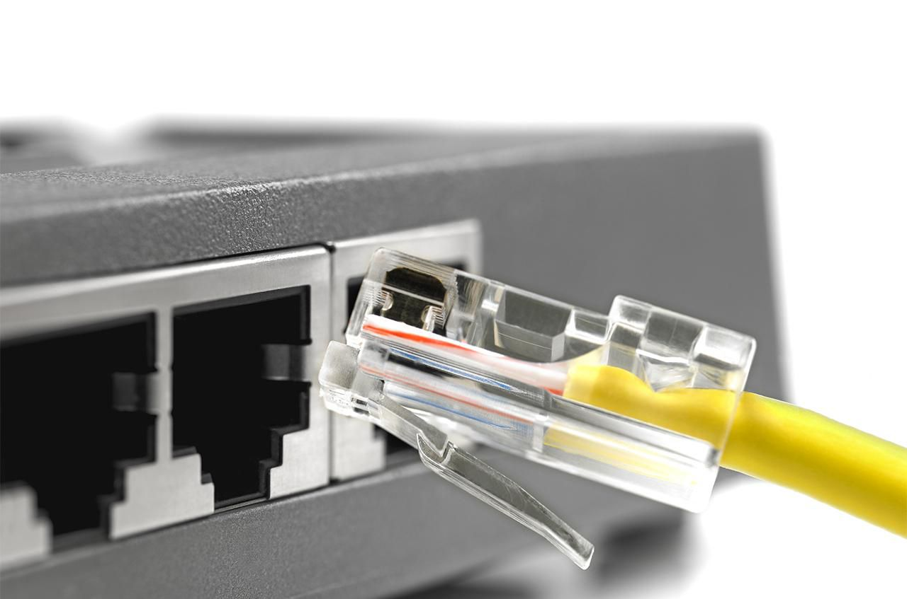
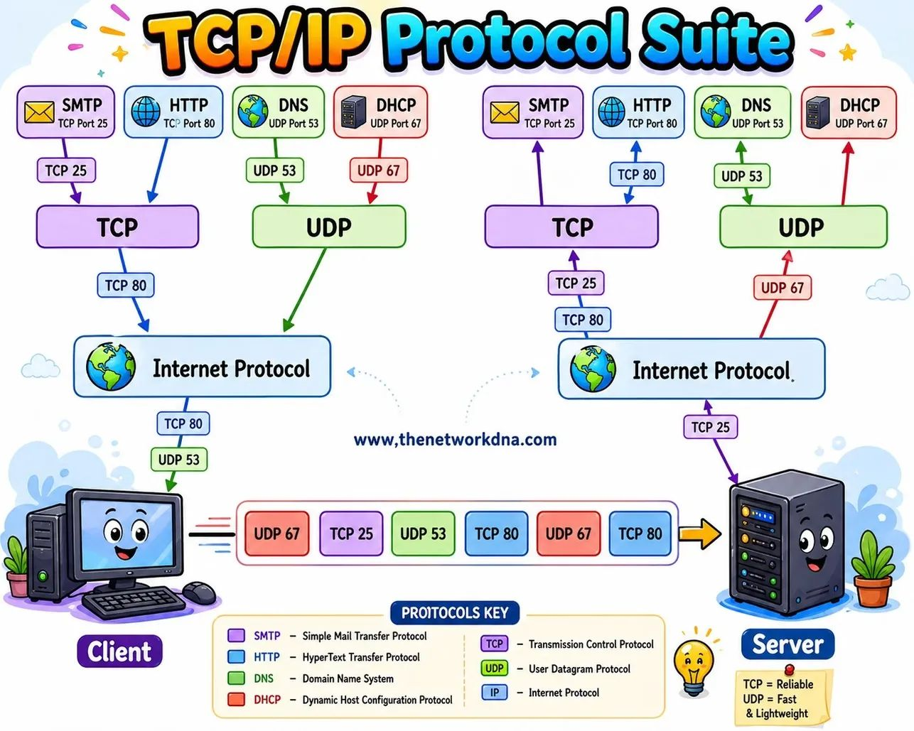
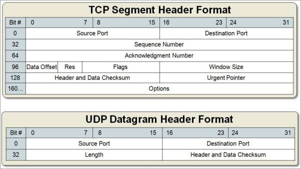
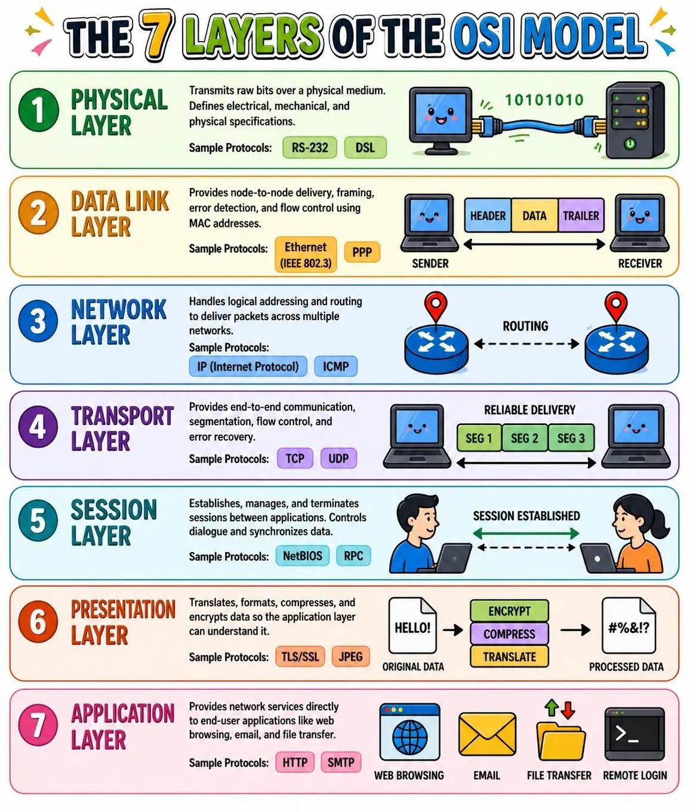
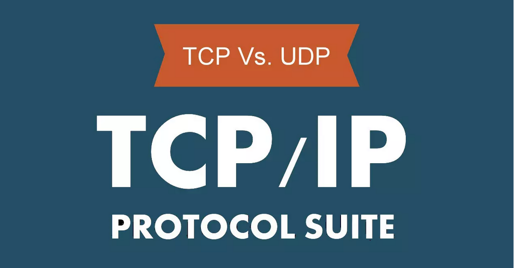
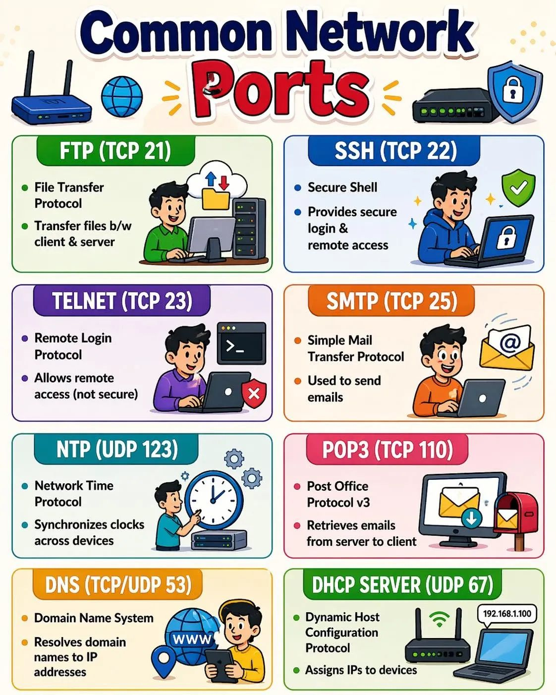

Puertos de Red
PUERTOS DE RED
Definición y uso
En el ámbito de las redes informáticas, los puertos de red representan un elemento esencial para la comunicación entre dispositivos y servicios en Internet. A través de ellos, los sistemas pueden identificar de forma precisa qué aplicación debe recibir o enviar información, permitiendo que múltiples procesos se ejecuten simultáneamente sobre una misma conexión.
Definición
Un puerto es un punto virtual en el que comienzan y terminan las conexiones de red.
Los puertos están basados en software y los gestiona el sistema operativo de un ordenador. Cada puerto está asociado a un proceso o servicio específico. Los puertos permiten a los ordenadores diferenciar fácilmente los distintos tipos de tráfico: los correos electrónicos van a un puerto distinto de las páginas web, por ejemplo, aunque ambos lleguen a un ordenador a través de la misma conexión a Internet.
Este documento aborda de manera detallada el funcionamiento de los puertos TCP y UDP, explicando su papel dentro del modelo de comunicación en red, especialmente en la capa de transporte. Asimismo, se analizan las diferencias entre ambos protocolos, sus características principales y los contextos en los que se utilizan.

Además, se presentan los puertos más comunes y sus aplicaciones, junto con la clasificación de los mismos según su rango y función. También se estudian aspectos clave relacionados con la eficiencia, seguridad y gestión de los puertos, destacando la importancia de su correcta configuración para evitar vulnerabilidades y optimizar el rendimiento de la red.
Contenidos
Esquema de los contenidos de las unidades
PUERTOS
graph TD;
A["PUERTOS DE RED<br>Definición y uso"] --> B["Definición básica<br>Puerto = número lógico"]
B --> C["¿Cómo funcionan?"]
C --> D["Socket = IP + Puerto"]
D --> E[Puertos TCP/UDP]
E --> F[TCP: fiable, orientado a conexión]
E --> G[UDP: rápido, sin garantía]
F --> H
G --> H[Modelo OSI]
H --> I[Puertos = capa de transporte]
I --> J[Tipos de puertos]
J --> K["Bien conocidos (0-1023)"]
J --> L["Registrados (1024-49151)"]
J --> M["Efímeros (49152-65535)"]
L --> N
M --> N
K --> N[Eficiencia del uso de puertos]
K --> O["Puertos más usados<br>HTTP, HTTPS, FTP, SSH, DNS..."]SEGURIDAD EN LOS PUERTOS
graph TD;
A[SEGURIDAD EN LAS CONEXIONES]
A --> B[Mejoras en los puertos]
B --> C[Estados de puertos]
C --> D[Abiertos]
C --> E[Cerrados]
C --> F[Filtrados]
F --> G
D --> G[Diferencias de rendimiento]
G --> H[Juegos online]
G --> I[Descargas P2P]
I --> J
H --> J[Riesgos]
J --> K["Amenazas<br>Malware, escaneo, DDoS"]
K --> L[Protección]
L --> M[Firewall, IDS/IPS]
L --> N[Actualizar servicios]
L --> O[Abrir solo los necesarios]
O --> P["Casos especiales<BR>DNS, DHCP, SNMP"]
P --> Q[Herramientas de comprobación]
Q --> R[Nmap, test de puertos]
R --> S[Problemas de red]
S --> T[CG-NAT]AMPLIACIÓN SOBRE DNS Y ARP
graph TD;
A[DNS]
A --> B["Caché del DNS<br>DNS flush"]
B --> C[Limpiar la caché DNS]
C --> D[Mejora rendimiento del equipo]
D --> E[Sistemas Operativos]
D --> F[Navegadores]
E --> G[Windows]
E --> H[Linux]
E --> I[MAC]
F --> J[Mozilla Firefox]
F --> K[Google Chrome<br>Opera]
L[ARP]
L --> M[Qué es la caché ARP]
M --> N[Cuando borrar<br>la caché ARP]
N --> O[Cómo borrar la caché ARP]
O --> P[Windows]
O --> Q[Linux]
O --> R[MAC]Puertos
1 - Definición
¿Qué son los puertos?
Antes de saber qué tipos de puertos hay y para qué se utiliza cada uno, es aconsejable tener bien claro qué son los puertos.
Para que se entienda de manera sencilla, un puerto se refiere a un punto de conexión final, como un router, que se utiliza para dirigir el tráfico de red entrante y saliente.
Definición de puerto de red
Un puerto de conexión de red es un número lógico que sirve para identificar un servicio o aplicación concreta dentro de un dispositivo conectado a una red (como un ordenador, servidor o router).
Cada puerto, está asociado virtualmente a un número y estos números, a su vez se dividen en diferentes categorías. La asignación de estos números es muy importante para garantizar una conexión ordenada y eficiente entre los diferentes dispositivos de la red.
Funciona junto con la dirección IP:
- IP → identifica el dispositivo
- Puerto → identifica el servicio dentro del dispositivo
Cómo funciona
Cuando un equipo envía datos por la red:
- Se indica la dirección IP del destinatario.
- Se añade un número de puerto para especificar qué aplicación debe recibir esos datos.
Si pensamos en un router, los puertos se utilizan para direccionar el tráfico de manera específica a aplicaciones concretas y servicios específicos. Por ejemplo, cuando envías una solicitud a un servidor web, el router recibe la solicitud en un puerto específico, como el 80 para HTTP o el 443 para HTTPS. Luego, el router redirige la solicitud al dispositivo correcto en la red interna donde estás conectado.

Además, cada puerto, tiene su propia función y dará mejores resultados para según qué servicio. Para el correo electrónico, por ejemplo, se utiliza el puerto 25. Por otro lado, los puertos privados permiten la comunicación interna dentro de la propia red sin que haya interferencias externas que puedan interrumpir la comunicación.
Al igual que también hay muchos puertos virtuales. Se pueden encontrar con números de puerto que van del 0 al 65535. Y es que los protocolos de Internet TCP y UDP deciden a qué proceso se envía el paquete de datos. Hay que tener en cuenta que esto se basa en un esquema servidor cliente.
Video explicativo
Veamos una explicación más detallada en video:
2 - Puerto TCP/UDP
¿Qué es un puerto TCP/UDP?
Un puerto TCP/UDP es un número de 16 bits (un valor entre 0 y 65535) que se utiliza para identificar un punto final (o socket) en una comunicación de red en un sistema informático. Estos puertos se utilizan en conjunto con el Protocolo de Control de Transmisión (TCP) y el Protocolo de Datagramas de Usuario (UDP), dos de los protocolos de comunicación más comunes en Internet.
La combinación de una dirección IP y un número de puerto TCP o UDP se denomina habitualmente SOCKET y se utiliza para dirigir el tráfico de red al servicio o aplicación correcta en un dispositivo o servidor. Cada número de puerto generalmente se asocia con un servicio específico o una aplicación en el sistema. Por ejemplo:
- El puerto 80 se asocia comúnmente con el tráfico web HTTP.
- El puerto 25 se usa para el correo electrónico saliente (SMTP).
- El puerto 53 se utiliza para las solicitudes de resolución de nombres de dominio (DNS).
- El puerto 22 se asocia con el protocolo SSH para la administración segura de sistemas.

TCP (Protocolo de Control de Transmisión) y UDP (Protocolo de Datagramas de Usuario) son dos de los protocolos de transporte más utilizados en Internet. TCP es un protocolo orientado a la conexión que garantiza la entrega de datos en el orden correcto y maneja la retransmisión de datos en caso de pérdida o error, es decir, controla y verifica que los datos lleguen al destinatario. UDP, por otro lado, es un protocolo sin conexión que no garantiza la entrega de datos ni el orden, pero es más rápido y eficiente para aplicaciones que no requieren una comunicación fiable, como la transmisión de video en tiempo real o juegos en línea.

¿Cómo hacen los puertos que las conexiones de red sean más eficientes?
Por una misma conexión de red fluyen tipos de datos muy diferentes hacia y desde un ordenador. El uso de puertos ayuda a los ordenadores a saber qué hacer con los datos que reciben.
Supongamos que Bob transfiere una grabación de audio en MP3 a Alice mediante el Protocolo de transferencia de archivos (FTP). Si el ordenador de Alice pasara los datos del archivo MP3 a la aplicación de correo electrónico de Alice, esta no sabría cómo interpretarlos. Pero ya que la transferencia de archivos de Bob utiliza el puerto designado para FTP (puerto 21), el ordenador de Alice es capaz de recibir y almacenar el archivo.
Entretanto, el ordenador de Alice puede cargar de forma simultánea páginas web HTTP utilizando el puerto 80, aunque tanto los archivos de la página web como el archivo de sonido MP3 circulan hacia el ordenador de Alice a través de la misma conexión WiFi.
3 - Puertos de la Capa de Red
¿Los puertos forman parte de la capa de red?
El Modelo OSI es un modelo conceptual de cómo funciona Internet. Divide los diferentes servicios y procesos de Internet en 7 capas. Estas capas son:

Los puertos son un concepto de la capa de transporte (capa 4). Solo un protocolo de transporte como el Protocolo de control de transmisión (TCP) o el Protocolo de datagrama de usuarios (UDP) puede indicar a qué puerto debe ir un paquete. Las cabeceras de TCP y UDP tienen una sección para indicar los números de puerto. Los protocolos de la capa de red, por ejemplo, el Protocolo de Internet (IP), no saben qué puerto está en uso en una determinada conexión de red. En una cabecera de IP estándar, no hay lugar para indicar a qué puerto debe ir el paquete de datos. Las cabeceras de IP solo indican la dirección IP de destino, no el número de puerto en esa dirección IP.
Normalmente, la imposibilidad de indicar el puerto en la capa de red no tiene impacto en los procesos de red, ya que los protocolos de la capa de red casi siempre se utilizan junto con un protocolo de la capa de transporte. Sin embargo, esto repercute en la funcionalidad del software de pruebas, que es el software que "comprueba la disponibilidad" de las direcciones IP de usando paquetes del Protocolo de control de mensajes de Internet (ICMP). El ICMP es un protocolo de capa de red que puede diagnosticar la disponibilidad de los dispositivos conectados a la red, pero sin la posibilidad de hacerlo para puertos concretos, los administradores de la red no pueden probar servicios específicos en esos dispositivos.
Añadir cabeceras UPD a paquetes ICMP
Algunos programas de diagnóstico de red, como My Traceroute, ofrecen la opción de enviar paquetes de UDP. El UDP es un protocolo de capa de transporte que puede especificar un puerto concreto, a diferencia del ICMP, que no puede especificar un puerto. Al añadir una cabecera de UDP a los paquetes ICMP, los administradores de la red pueden probar puertos específicos en un dispositivo en red.
4 - Tipos de puertos
¿Qué tipos de puerto hay?

Imagina que los puertos son como ventanas virtuales que permiten que la información entre y salga en un ordenador. Hay dos tipos principales de protocolos que se usan en Internet: TCP y UDP.
Por un lado, el protocolo TCP es como el correo postal. Cuando enviamos información importante, como un correo electrónico, donde no podemos permitirnos una pérdida de datos, usamos TCP. Es muy confiable porque asegura que todos los datos lleguen en el orden correcto y sin errores. Como si cada paquete de datos tuviera un recibo de entrega.
Y, por otro lado, el protocolo UDP es más rápido pero menos confiable. Se utiliza para actividades como transmisiones de vídeo en directo o para juegos online, donde la pérdida de algunos datos no supone un gran problema. Como una conversación telefónica, donde puedes perder algunas palabras, pero esto no supone un problema en la recepción del mensaje.
Una de las diferentes más claras entre estos dos puertos es que la entrega en sí no está garantizada. Es decir, el puerto UDP se usa con el fin de enviar un datagrama del remitente al supuesto receptor, el cual se entrega en un paquete IP. Por lo tanto, los números de puertos son los que marcan la diferencia significativa entre un datagrama UDP y el paquete IP. En cambio, por culpa de la falta de garantía de la correspondiente entrega, el puerto TCP es la que se elige para aquellos servicios en los que es necesario que el envío de los datos sea de manera segura y confiable. Como puede ser el caso de emails o sitios web.

Tipos de puertos
TCP y UDP hacen referencia al protocolo de la capa de transporte utilizado para la comunicación extremo a extremo entre dos host, los puertos forman parte del propio segmento TCP o datagrama UDP para que la comunicación se establezca correctamente. Podríamos decir que los «puertos» son algo así como las «puertas» hacia un determinado servicio, independientemente de si utilizamos TCP o UDP ya que ambos protocolos hacen uso de los puertos. Los puertos en sí mismos no son peligrosos, un puerto es un puerto y da lo mismo que sea el puerto 22 que el 50505, lo que más importante es el uso que se le da a un puerto, lo peligroso es tener un puerto abierto hacia un servicio de la capa de aplicación que no esté protegido, porque cualquiera se podría conectar a dicho servicio y explotar vulnerabilidades o hackearnos directamente. Por supuesto, siempre es necesario que si exponemos un puerto a Internet, controlemos el tráfico con un IDS/IPS para detectar posibles ataques, y tener el programa que está escuchando en este puerto actualizado.
Tanto en TCP como en UDP tenemos un total de 65535 puertos disponibles, tenemos una clasificación dependiendo del número de puerto a utilizar, ya que algunos puertos son los comúnmente llamados «conocidos», y que están reservados para aplicaciones específicas, aunque hay otros muchos puertos que se utilizan habitualmente por diferentes software para comunicarse tanto a nivel de red local o a través de Internet. También tenemos los puertos registrados, y los puertos efímeros.
- Puertos conocidos: los puertos conocidos (well-known en inglés) van desde el puerto 0 hasta al 1023, están registrados y asignados por la Autoridad de Números Asignados de Internet (IANA). Por ejemplo, en este listado de puertos está el puerto 20 de FTP-Datos, el puerto 21 de FTP-Control, el puerto 22 de SSH, puerto 23 de Telnet, puerto 80 y 443 para web (HTTP y HTTPS respectivamente), y también el puerto de correo entre otros muchos protocolos de la capa de aplicación.
- Puertos registrados: los puertos registrados van desde el puerto 1024 hasta al 49151. La principal diferencia de estos puertos, es que las diferentes organizaciones pueden hacer solicitudes a la IANA para que se le otorgue un determinado puerto por defecto, y se le asignará para su uso con una aplicación en concreto. Estos puertos registrados están reservados, y ninguna otra organización podrá registrarlos nuevamente, no obstante, normalmente están como «semireservados», porque si la organización deja de utilizarlo podrá reutilizarse por otra empresa. Un claro ejemplo de puerto registrado es el 3389, se utiliza para las conexiones RDP de Escritorio Remoto en Windows.
- Puertos efímeros: estos puertos van desde el 49152 hasta el 65535, este rango de puertos se utiliza por los programas del cliente, y están constantemente reutilizándose. Este rango de puertos normalmente se utiliza cuando está transmitiendo a un puerto conocido o reservado desde otro dispositivo, como en el caso de web o FTP pasivo. Por ejemplo, cuando nosotros visitamos una web, el puerto de destino siempre será el 80 o el 443, pero el puerto de origen (para que los datos sepan cómo volver) hace uso de un puerto efímero.
Principales puertos TCP
Cuando necesitamos acceder a un servicio desde Internet, es totalmente necesario abrir un puerto en nuestro router. Actualmente disponemos de dos protocolos en la capa de transporte, TCP y UDP, por tanto, dependiendo del tipo de servicio que queramos utilizar, tendremos que abrir el puerto TCP o UDP, aunque también podría haber servicios que necesiten abrir un puerto TCP y UDP simultáneamente.
El protocolo TCP es un protocolo conectivo, fiable y orientado a conexión, esto significa que es capaz de retransmitir los segmentos de paquetes en caso de que haya alguna pérdida desde el origen al destino. El protocolo TCP para establecer la conexión realiza el 3-way handshake, con el objetivo de que la conexión sea lo más fiable posible. Si estamos utilizando algún protocolo en la capa de aplicación como HTTP, FTP o SSH que todos ellos utilizan el protocolo TCP, en la primera comunicación se realizará este intercambio de mensajes.
Si vas a montar en tu casa, oficina o empresa algún tipo de servidor, como un servidor FTP, SSH o OpenVPN, entonces deberás abrir uno o varios puertos para poder hacer uso de estos servicios y acceder desde Internet. Actualmente todos los routers hacen NAT con la IP pública, por tanto, es completamente necesario abrir puertos en la NAT, o mejor dicho, realizar el reenvío de puertos (port forwarding) para que sean accesibles desde Internet. A continuación, podrás ver un completo listado de los principales puertos TCP que usan muchos protocolos de la capa de aplicación y también aplicaciones:
- Puerto 0: TCP en realidad no usa el puerto 0 para la comunicación de red, pero este puerto es bien conocido por los programadores de redes. Los programas de socket TCP usan el puerto 0 por convención para solicitar que el sistema operativo elija y asigne un puerto disponible. Esto evita que un programador tenga que elegir («codificar») un número de puerto que podría no funcionar bien para la situación.
- Puerto 21: El puerto 21 por norma general se usa para las conexiones a servidores FTP en su canal de control, siempre que no hayamos cambiado el puerto de escucha de nuestro servidor FTP o FTPES.
- Puerto 22: Por normal general este puerto se usa para conexiones seguras SSH y SFTP, siempre que no hayamos cambiado el puerto de escucha de nuestro servidor SSH.
- Puerto 23: Telnet, sirve para establecer conexión remotamente con otro equipo por la línea de comandos y controlarlo. Es un protocolo no seguro ya que la autenticación y todo el tráfico de datos se envía sin cifrar.
- Puerto 25: El puerto 25 es usado por el protocolo SMTP para él envió de correos electrónicos, también el mismo protocolo puede usar los puertos 26 y 2525.
- Puerto 53: Es usado por el servicio de DNS, Domain Name System.
- Puerto 80: Este puerto es el que se usa para la navegación web de forma no segura HTTP.
- Puerto 101: Este puerto es usado por el servicio Hostname y sirve para identificar el nombre de los equipos.
- Puerto 110: Este puerto lo usan los gestores de correo electrónico para establecer conexión con el protocolo POP3.
- Puerto 123: Es un puerto utilizado por el NTP o Protocolo de tiempo en red, es uno de los protocolos más importantes a nivel de redes, ya que se utiliza para mantener los dispositivos sincronizados en Internet. Podemos incluso considerarlo vital, ya que, debido a la precisión de los relojes, facilitan mucho la interrelación de problemas de un dispositivo a otro.
- Puertos 137, 138 y 139: Estos puertos son utilizados por el Protocolo NetBIOS o NBT, lo habréis escuchado mucho si trabajáis en redes en Windows, ya que ha sido durante mucho tiempo el protocolo TCP principal para interconectar los equipos que están bajo este sistema operativo, lógicamente se utiliza en la mayoría de las veces en combinación con el IP utilizando así la famosa combinación TCP/IP que todos conocemos en este mundillo.
- Puerto 143: El puerto 143 lo usa el protocolo IMAP que es también usado por los gestores de correo electrónico.
- Puerto 179: Es el puerto utilizado por el Protocolo de puerta de enlace fronteriza o BGP por sus siglas en inglés, es otro protocolo muy importante a nivel de redes, ya que, en su mayoría, es utilizado por los proveedores de servicio para ayudar a mantener las enormes tablas de enrutamiento que existen hoy en día. También es utilizado para procesar las inmensas cantidades de tráfico en las redes, por lo que es uno de los protocolos más utilizados en las redes públicas.
- Puerto 194: Aunque herramientas como aplicaciones de mensajería para teléfonos inteligentes y servicios como Slack y Microsoft Teams han reducido el uso de Internet Relay Chat, IRC sigue siendo popular entre personas de todo el mundo. Por defecto, IRC usa el puerto 194.
- Puerto 443: Este puerto es también para la navegación web, pero en este caso usa el protocolo HTTPS que es seguro y utiliza el protocolo TLS por debajo.
- Puerto 445: Este puerto es compartido por varios servicios, entre el más importante es el Active Directory.
- Puerto 587: Este puerto lo usa el protocolo SMTP SSL y, al igual que el puerto anterior sirve para el envío de correos electrónicos, pero en este caso de forma segura.
- Puerto 591: Es usado por Filemaker en alternativa al puerto 80 HTTP.
- Puerto 853: Es utilizado por DNS over TLS.
- Puerto 990: Si utilizamos FTPS (FTP Implícito) utilizaremos el puerto por defecto 990, aunque se puede cambiar.
- Puerto 993: El puerto 993 lo usa el protocolo IMAP SSL que es también usado por los gestores de correo electrónico para establecer la conexión de forma segura.
- Puerto 995: Al igual que el anterior puerto, sirve para que los gestores de correo electrónico establezcan conexión segura con el protocolo POP3 SSL.
- Puerto 1194: Este puerto está tanto en TCP como en UDP, es utilizado por el popular protocolo OpenVPN para las redes privadas virtuales.
- Puerto 1723: Es usado por el protocolo de VPN PPTP.
- Puerto 1812: se utiliza tanto con TCP como con UDP, y sirve para autenticar clientes en un servidor RADIUS.
- Puerto 1813: se utiliza tanto con TCP como con UDP, y sirve para el accounting en un servidor RADIUS.
- Puerto 2049: es utilizado por el protocolo NFS para el intercambio de ficheros en red local o en Internet.
- Puertos 2082 y 2083: es utilizado por el popular CMS cPanel para la gestión de servidores y servicios, dependiendo de si se usa HTTP o HTTPS, se utiliza uno u otro.
- Puerto 3074: Lo usa el servicio online de videojuegos de Microsoft Xbox Live.
- Puerto 3306: Puerto usado por las bases de datos MySQL.
- Puerto 3389: Es el puerto que usa el escritorio remoto de Windows, muy recomendable cambiarlo.
- Puerto 4662 TCP y 4672 UDP: Estos puertos los usa el mítico programa eMule, que es un programa para descargar todo tipo de archivos.
- Puerto 4899: Este puerto lo usa Radmin, que es un programa para controlar remotamente equipos.
- Puerto 5000: es el puerto de control del popular protocolo UPnP, y que por defecto, siempre deberíamos desactivarlo en el router para no tener ningún problema de seguridad.
- Puertos 5400, 5500, 5600, 5700, 5800 y 5900: Son usados por el programa VNC, que también sirve para controlar equipos remotamente.
- Puertos 6881 y 6969: Son usados por el programa BitTorrent, que sirve para e intercambio de ficheros.
- Puerto 8080: es el puerto alternativo al puerto 80 TCP para servidores web, normalmente se utiliza este puerto en pruebas.
- Puertos 51400: Es el puerto utilizado de manera predeterminada por el programa Transmission para descargar archivos a través de la red BitTorrent.
- Puerto 25565: Puerto usado por el famoso videojuego Minecraft.
Un aspecto muy importante de los puertos TCP, es que existe un rango de puertos desde el 49152 al 65535 que son los puertos efímeros, es decir, con cada conexión de origen que nosotros realicemos, se utilizan estos puertos que son dinámicos. Por ejemplo, si realizamos una petición a una web, el puerto de origen estará en este rango 49152-65535, y el puerto de destino será el 80 (HTTP) o 443 (HTTPS).
Otro detalle muy importante, es que, si utilizas el protocolo FTP, hoy en día se utiliza siempre FTP PASV, por lo que no solamente es necesario abrir el puerto TCP 21 para control, sino que deberemos abrir un rango de puertos para el intercambio de archivos entre el cliente FTP y el servidor FTP, de lo contrario, no podremos empezar a realizar las transferencias de datos.
No obstante, hay que tener otros puntos en cuenta, como es el caso de que no ofrece una separación entre las diferentes interfaces, protocolos o servicios, al igual que fue desarrollado de primeras en redes de área amplia. Por lo que no está realmente optimizado para redes más pequeñas como LAN o PAN.
En cualquier caso, estos serían los puertos más usados e importantes cuando hacen uso del protocolo TCP. En los equipos siempre los tendremos abiertos a no ser que un firewall lo esté cerrando explícitamente, pero en el router deberemos abrir todos estos puertos (port-forwarding o también conocido como reenvío de puertos) ya que estamos en un entorno NAT, y todos los puertos están cerrados.
Principales puertos UDP
- Puerto 23: Este puerto es usado en dispositivos Apple para su servicio de Facetime.
- Puerto 53: Es utilizado para servicios DNS, este protocolo permite utilizar tanto TCP como UDP para la comunicación con los servidores DNS.
- Puerto 67: Los servidores del Protocolo de configuración dinámica de host usan el puerto UDP 67 para escuchar las solicitudes.
- Puerto 68: Por su parte los clientes DHCP se comunican en el puerto UDP 68.
- Puerto 69: Este puerto es utilizado sobre todo por el Protocolo trivial de transferencia de archivos o TFTP, dicho protocolo es el que nos ofrece un método para transferir nuestros archivos, pero sin tantos requisitos para el establecimiento de sesiones como podría por ejemplo utilizar el FTP. Cabe destacar que al utilizar UDP en lugar de TCP, este protocolo no puede garantizar de ninguna forma que nuestros archivos hayan sido transferidos de manera correcta, por lo que el dispositivo al que lo estamos enviando, debe tener la capacidad de verificar que dicha transferencia se ha realizado adecuadamente.
- Puerto 88: El servicio de juegos en red de Xbox utiliza varios números de puerto diferentes, incluido el puerto UDP 88.
- Puerto 161: De manera predeterminada, el Protocolo simple de administración de redes usa el puerto UDP 161 para enviar y recibir solicitudes en la red que se administra.
- Puerto 162: Se utiliza el puerto UDP 162 como predeterminado para recibir capturas SNMP desde dispositivos administrados.
- Puerto 500: este puerto es utilizado por el protocolo de VPN IPsec, concretamente se usa por ISAKMP para la fase 1 del establecimiento de la conexión con IPsec.
- Puerto 514: Es usado por Syslog, el log del sistema operativo.
- Puerto 1194: este puerto es el predeterminado del protocolo OpenVPN, aunque también se puede utilizar el protocolo TCP. Lo más normal es usar UDP 1194 porque es más rápido a la hora de conectarnos y también de transferencia, obtendremos más ancho de banda.
- Puerto 1701: Es usado por el protocolo de VPN L2TP.
- Puerto 1812: se utiliza tanto con TCP como con UDP, y sirve para autenticar clientes en un servidor RADIUS.
- Puerto 1813: se utiliza tanto con TCP como con UDP, y sirve para el accounting en un servidor RADIUS.
- Puerto 4500: este puerto también es utilizado por el protocolo de VPN IPsec, se utiliza este puerto para que el funcionamiento de la NAT sea perfecto. Este puerto se utiliza en la fase 2 del establecimiento IPsec, pero también tenemos que tener abierto el puerto UDP 500.
- Puerto 51871: es utilizado por el protocolo de VPN Wireguard de manera predeterminada.
Cabe destacar que los números de puerto TCP y UDP entre 1024 y 49151 se denominan puertos registrados, la Autoridad de Números Asignados de Internet mantiene una lista de servicios que utilizan estos puertos para minimizar los usos conflictivos.
A partir de estos numeros en adelante y a diferencia de los puertos con números más bajos, los desarrolladores de nuevos servicios TCP/UDP pueden seleccionar un número específico para registrarse con IANA en lugar de que se les asigne un número. El uso de puertos registrados también evita las restricciones de seguridad adicionales que los sistemas operativos imponen a los puertos con números más bajos.
Tal y como habéis visto, tenemos una gran cantidad de puertos TCP y UDP que utilizaremos muy a menudo. Estos son los principales puertos que podemos utilizar para los diferentes servicios, no obstante, hay cientos de puertos TCP y UDP más que utilizan diferentes aplicaciones, pero estos son los más importantes y utilizados.
Puertos más utilizados
Como puedes ver, existen gran cantidad de puertos en Internet que se utilizan para las diferentes aplicaciones y servicios que nos podemos encontrar y utilizar. Cada uno de ellos tiene su función específica en la transmisión de datos. Pero hay algunos de ellos, los cuales tienen un índice de uso mucho más alto que los demás, lo cual los convierte en los más utilizados. Estos son:

- Puerto 80: Es el puerto utilizado por HTTP, el protocolo de transferencia de hipertexto que se utiliza para acceder a todas las páginas web. La mayoría de los sitios web lo utilizan para transmitir todo su contenido.
- Puerto 443: Es el puerto utilizado por HTTPS, el protocolo de transferencia de hipertexto seguro. Permite la transmisión segura de datos por toda la red y se utiliza para transacciones en línea, como compras, transacciones bancarias, bolsa, entre otros.
- Puerto 21: Es el puerto utilizado por el protocolo FTP (File Transfer Protocol), que se utiliza para la transferencia de archivos entre dispositivos en una red. Su uso principal es para la transferencia de archivos grandes, como imágenes o videos entre otros archivos.
- Puerto 22: Es el puerto utilizado por el protocolo SSH (Secure Shell), que se utiliza para la conexión segura a un servidor remoto. Es utilizado por los administradores de sistemas para la gestión de servidores, entre otras aplicaciones con funciones similares.
- Puerto 25: Es el puerto utilizado por el protocolo SMTP (Simple Mail Transfer Protocol), que se utiliza para la transferencia de correo electrónico. Se utiliza para poder enviar correos electrónicos desde un cliente de correo electrónico a un servidor de correo electrónico.
- Puerto 53 UDP: Es el puerto utilizado por el protocolo DNS (Domain Name System), que se utiliza para traducir nombres de dominio en direcciones IP. Es esencial para la navegación por internet hoy en día, ya que permite que los navegadores web accedan a los sitios web utilizando nombres de dominio y no direcciones IP que son más complicadas.
- Puerto 110: Es el puerto utilizado por el protocolo POP3 (Post Office Protocol version 3), que se utiliza para recibir correo electrónico en un cliente de correo electrónico. En combinación con el puerto 25.
- Puerto 161 UDP: se utiliza por el protocolo SNMP para visualizar la configuración y administrar diferentes equipos como routers, switches, y también servidores. Es recomendable cerrarlo si no vas a usarlo.
- Puerto 4444: este puerto se suele utilizar por parte de troyanos y malware en general, es recomendable tenerlo siempre bloqueado.
- Puertos 6660-6669: estos puertos es usado por el popular IRC, si no lo usamos, no lo abrimos.
Si quieres conocer todos los puertos que hay ahora mismo asignados oficialmente en IANA, puedes visitar este enlace:

https://www.iana.org/assignments/service-names-port-numbers/service-names-port-numbers.xhtml
Seguridad conexiones
1 - Mejoras en los puertos
Mejoras en los puertos TCP/UDP
Como puedes ver, los puertos TCP y UDP son una parte fundamental en Internet hoy en día. Estos se han utilizado ampliamente para las comunicaciones, durante décadas. Pero a pesar de que se ha demostrado que son eficaces y confiables para tal efecto, es muy importante que continúen evolucionando para poder adaptarse a los cambios y demandas actuales. Esto se debe al aumento exponencial de las aplicaciones que los requiere, así como para los servicios en línea que también son cada vez más.
En el caso de TCP, alguna evolución puede pasar por las mejoras en la eficiencia y velocidad de transferencia de los datos. Para ello muchos desarrolladores exploran diferentes técnicas como puede ser la segmentación y la multiplexación. Estos mejoran los flujos de datos, para así optimizar la transmisión cuando se trata de grandes volúmenes de datos. Por otro lado, también se trabaja en mecanismos para poder controlar la congestión de la red. De forma que esta se hace más efectiva, y garantiza un rendimiento lo más óptimo posible en todos los casos.
En el caso del protocolo UDP, este se ha utilizado mucho en aplicaciones donde se requiere una comunicación muy rápida. Pueden ser videojuegos o transmisiones en tiempo real. En cambio, está falto de mecanismos de control para prevenir errores, y la retransmisión de paquetes limita sus aplicaciones en algunos contextos. Por lo cual una posible evolución en este aspecto, podría ser el implicar la incorporación de mecanismos más selectivos para el control de errores y retransmisión. Lo cual puede permitir que se utilice en aplicaciones donde es muy importante mantener una integridad muy alta en los datos.
Por otro lado, algo en lo que siempre se está evolucionando y mejorando es la seguridad. En los tiempos que corren los datos que se manejan en Internet son más privados que nunca, por lo cual la seguridad es un aspecto que no se puede olvidar nunca. Pero esto es algo que ya se aplica a prácticamente cualquier sistema ya en uno, o en desarrollo.
Diferentes estados de los puertos
Para determinar el estado de los puertos, podemos utilizar tres términos los cuales varían en función de la configuración de los mismos.
- Puertos cerrados: Cuando la comunicación es rechazada completamente, por lo cual no generan ningún tráfico entrante o saliente.
- Puertos filtrados: Todo el tráfico que transcurre por estos, es filtrado por aplicaciones de seguridad como los firewall.
- Puertos abiertos: Cuando un servicio está escuchando en este puerto, y es accesible desde el exterior.
Diferencias de rendimiento
Con TCP estamos ante un protocolo orientado a la conexión. Esto quiere decir que establece la conexión entre dos dispositivos, previamente a enviar los datos. Una vez esta está creada, TCP utiliza procesos de confirmación para poder garantizar que todos los datos se entreguen sin errores y en el orden correcto. Por lo cual es un protocolo confiable y seguro que se utiliza para la transmisión de datos críticos y sensibles, como la información financiera o los correos electrónicos. En cambio, estos procesos de confirmación y verificación de errores tienen un impacto significativo en el rendimiento de la red.
Por lo general, TCP es más lento que UDP y requiere más ancho de banda. Esto ocurre porque cada paquete debe ser confirmado antes de que se envíe el siguiente, aumentando así la cantidad de tiempo que se tarda en realizar los envíos. Al cual tendremos que sumar, los procesos de confirmación.
Por otro lado, con UDP estamos ante un protocolo sin conexión que no requiere una conexión previa entre los dispositivos antes de enviar datos. Esto quiere decir que los paquetes se envían inmediatamente y sin confirmación de recepción.
Esto hace que estemos ante un protocolo rápido y eficiente que se utiliza para aplicaciones en tiempo real, como el streaming de video y audio, videojuegos o videollamadas. Pero a pesar de su rapidez, se trata de un sistema que es menos confiable que TCP. Esto ocurre porque no dispone de una confirmación de recepción, y tampoco contienen mecanismos de corrección de errores. Estos paquetes, se pueden perder o incluso llegar en un orden que no es el adecuado al envío que se ha realizado. Por lo cual puede afectar a la calidad de los datos que se han transmitido, siendo este el motivo por el cual se descarta para otro tipo de comunicaciones.
En definitiva, hay que tener claro que, en términos de rendimiento puro, lo cierto es que los puertos UDP son los que ofrecen una mayor eficiente, siempre en comparación con los puertos TCP. Y todo porque este no pone una conexión antes de la transmisión en sí, por lo que los paquetes se envían de una forma más rápida y con una mejor latencia. Esto hace que, en servicios como los de almacenamiento en la nube en tiempo real, se use más el otro protocolo. Al igual que en otras opciones como videojuegos o transmisiones de vídeo en directo.
Por qué es importante abrir puertos
Hemos mostrado los principales puertos tanto TCP como UDP. Ahora vamos a hablar de por qué en ocasiones es importante abrir determinados puertos. Lo es para que la conexión pueda pasar correctamente y lograr así una buena velocidad, evitar cortes y no tener problemas para acceder a ciertos servicios.
Jugar por Internet
Un ejemplo claro es para jugar por Internet. Los juegos utilizan determinados puertos para poder establecer una conexión. Para que esa conexión sea veloz y no aparezcan cortes, es necesario saber qué puertos utiliza cada juego y abrirlos en el router. Esto evitará problemas o que incluso no puedas entrar en una partida determinada. Esto es algo que puede ser necesario tanto a la hora de jugar en ordenador como también a través de videoconsolas. Debes informarte bien sobre qué puertos utiliza cada juego y si es necesario o no abrirlos. En algunos routers incluso verás puertos predeterminados en la configuración para abrirlos fácilmente para determinados juegos populares.
Videoconsolas como la PS4, PS5 o xBox pueden requerir de abrir un rango de puertos específico para poder jugar a determinados juegos sin que haya problemas. Podrás encontrar mucha información en Internet, en foros especializados o en la propia página de los videojuegos, donde verás cuáles debes abrir y así poder configurar correctamente tu router.
En cuanto al puerto que los videojuegos van a utilizar, la elección es un proceso crítico. Y lo cierto es que de forma constante es muy incomprendido ante la creación de un videojuego online. En muchos casos, los desarrolladores tienen la capacidad y libertad de poder seleccionar los puertos que van a utilizar para sus servicios online y poder sacar el juego a la comunidad. A menudo, se eligen puertos muy específicos por diferentes razones. Algunos de ellos son bien conocidos y están asociados con un tráfico muy particular de la red. Como puede ser el puerto 80 o el 443. En cambio para evitar todo tipo de conflictos con otros servicios, suelen elegir puertos en rangos de entre 1024 y 49151. Lo cuales se conocen como puertos registrados.
La elección de este puerto, también puede estar muy dictada por diferentes razones, como las convenciones de la industria del videojuego. Algunos juegos multijugador, pueden usar los mismos puertos para que la configuración sea mucho más sencilla para las redes de los jugadores. Y por supuesto, a la hora de resolver problemas también tendremos muchos videojuegos en el mismo puerto. Por lo cual sabemos más o menos hacia donde apuntar en todo caso.
Cabe destacar, que los desarrolladores tienen capacidades para elegir el puerto. Pero es posible que no todos los juegos permitan a los jugadores modificar este parámetro para cambiar de puerto. Esto por lo general tiene sus razones, como puede ser la seguridad, la simplicidad de la conexión, o simplemente que el jugador tenga la experiencia de juego tal cual fue diseñada. Existen varias formas en las cuales los jugadores pueden configurar el router para que en juego funcione mejor. Pero lo más sensato en estos casos, es acudir a la página oficial de la desarrolladora, donde encontraremos en muchas ocasiones la información necesaria con respecto al puerto que utilizan sus videojuegos.
Descargas P2P
Algo similar ocurre al utilizar aplicaciones de descargas P2P. Estos programas van a conectarse a determinados puertos para establecer la conexión. Si esos puertos están cerrados, se produciría un cuello de botella y la velocidad de las descargas sería muy limitada y podrías tener problemas para bajar archivos correctamente.
Por ejemplo para usar BitTorrent o uTorrent será necesario tener los puertos abiertos correctamente. En algunos casos no será necesario y no notarás diferencia, pero en otras ocasiones sí que podrás ver que los archivos se descargan mucho más rápido. Aplicaciones de descargas P2P clásicas como eMule incluso mostraban una señal que indicaba que los puertos estaban cerrados y la velocidad de descarga muy limitada.
Especialmente en la descarga de archivos es cuando más interesa que la aplicación aproveche al máximo la capacidad que tiene nuestra conexión. Esto puede ser determinante de cara a que una descarga tarde más o tarde menos en completarse.
2 - Seguridad para abrir puertos
Seguridad para abrir puertos
Siempre y cuando realizamos aperturas de puertos, es muy recomendable contar con algún sistema de seguridad que sea capaz de analizar el tráfico que fluye por estos en tiempo real. Los ataques a los que nos exponemos al abrir puertos, pueden ser muy peligrosos al proporcionar malware, accesos no autorizados, y ataques DDoS que causan denegaciones de servicio.
Antes de abrir un puerto, debemos estar seguros que realmente es necesario abrirlo para el correcto funcionamiento de alguna aplicación o servicio. Por la contra, si estos no son necesarios, lo más recomendable es dejarlos cerrados, de forma que nada se pueda colar por ellos y generar algún tipo de problema como el robo de información, o una infección del dispositivo.
Por tanto, como has podido ver son varias las circunstancias en las que vas a tener que abrir los puertos del router. Esto permitirá que tu conexión funcione mejor, con más velocidad y evitar ciertos problemas que puedan afectarte a la hora de jugar, descargar o comunicarte a través de aplicaciones. Ahora bien, si realmente no necesitas tener los puertos abiertos lo ideal, por seguridad, es que permanezcan cerrados. Abre únicamente aquellos que sí que vas a necesitar que estén abiertos y así evitarás riesgos innecesarios que puedan afectar a tu seguridad en la red.
Por qué algunos puertos TCP y UDP son peligrosos
En la capa de transporte del modelo TCP/IP, disponemos de dos tipos de protocolos: TCP y UDP. Ambos se utilizan constantemente por los diferentes programas y protocolos de la capa de aplicación, como el puerto 80 y 443 para navegar por la web, el puerto 22 para el protocolo SSH, o el popular puerto 1194 para las VPN con OpenVPN. Algunos de estos puertos son bastante peligrosos si no los filtramos correctamente con un firewall, porque podrían realizarnos diferentes tipos de ataques e incluso hackearnos nuestro equipo.

Normalmente cuando abrimos puertos en nuestros routers, es pensando en algún beneficio que estos nos van a dar, bien sea para que alguna aplicación funcione, o mejorar el rendimiento de otra. Pero estos pueden conllevar algunos peligros, los cuales pueden comprometer no solo nuestro equipo, si no todos los dispositivos que se encuentran en la misma red. Si estos puertos se dejan sin supervisión, los ataques a través de estos aumentan considerablemente.
- Malware, troyanos y accesos: Los puertos abiertos facilitan la comunicación con muchos servicios de internet, y entre ellos los maliciosos. Malware y troyanos son los que más aprovechan este tipo de configuraciones para colarse en las redes y ejecutar servicios no autorizados en los puertos. Algunos de ellos, solo se pueden detectar realizando escaneos muy detallados del sistema. Entre otras cosas, puede quedar expuesta información sensible, robos de credenciales, o que nuestro equipo se pueda manejar de forma remota por un atacante.
- Exposición de vulnerabilidades: Las herramientas de análisis de redes entran aquí en juego, pues los atacantes las utilizan para crear listados de los puertos abiertos. Luego pueden comunicarse con los servicios que escuchan en los puertos abiertos para encontrar información de nuestro equipo. Todo esto, puede servir para posteriores ataques.
- Ataques DDoS: Los puertos abiertos facilitan la transferencia de paquetes para toda aquella entidad que use alguno de los puertos. Si una de ellas establece comunicación, ninguna otra podrá usar ese puertos en ese momento, lo cual puede generar ataques de denegación de servicio, lo cual haría que no sea accesible.
Puertos de servidores más hackeados
Como sabemos, los servidores son elementales para las conexiones de Internet. Son imprescindibles para juegos, comunicaciones, correo electrónico, páginas web en general. Son muchos los puertos que hay en la red y que permiten acceder a estos servidores, así como al contenido en general. Hay miles de puertos y muchos de ellos tienen funciones concretas. Algunos pueden estar abiertos para que alguna determinada herramienta funcione. En este artículo vamos a ver cuáles son los puertos que suelen ser hackeados más frecuentemente.
Hay determinados protocolos que utilizan un puerto generalmente. Algunos servidores están diseñados para transferir archivos, otros acceder a equipos remotos, intercambiar mensajes, jugar por Internet. Como decimos, hay muchos puertos que están presentes en la red. Hay determinados protocolos que normalmente utilizan uno en concreto. Vamos a ver cuáles son los más atacados, poniéndolos en orden.
- FTP-21: sin duda uno de los puertos más populares es el 21. Es el que corresponde al protocolo FTP. Permite la transferencia de archivos entre diferentes equipos que estén conectados a una red TCP. Generalmente este protocolo utiliza el puerto 21. Es utilizado para autenticarse en un servidor de forma remota. Los piratas informáticos, dentro de las opciones donde ponen sus miras, tienen muy en cuenta este puerto concreto.
- SSH-22: otro puerto muy utilizado es el 22 por el protocolo SSH. Está diseñado para controlar y modificar servidores de forma remota a través de la red. Tiene un mecanismo que permite autenticar un usuario y fue creado como un sustituto seguro para Telnet. Hoy en día es uno de los objetivos principales de los ciberdelincuentes. A fin de cuentas, como decimos, ponen sus miras en aquello que es más utilizado y donde por tanto pueden tener más éxito.
- Telnet-23: aunque se trata de un protocolo antiguo, todavía sigue estando muy presente. Los piratas informáticos pueden poner sus miras también en este puerto 23. Es una herramienta que permite conectarnos en remoto a otro equipo. Muy útil por ejemplo para llevar a cabo una reparación a distancia. Como decimos, es un protocolo antiguo y ha quedado algo en desuso. Precisamente SSH llegó para mejorar la seguridad.
- SMTP-25: SMTP viene de Simple Mail Transfer Protocol. Sirve para el intercambio de mensajes a través del correo electrónico entre diferentes dispositivos conectados a la red. Por ejemplo podemos mandar un mensaje de un ordenador a un móvil o viceversa. Generalmente utiliza el puerto 25 del router y es, una vez más, uno de los más atacados por los ciberdelincuentes.
- HTTP-80: es otro protocolo básico en la red. HTTP es el que nos permite transferir información en la web. Indispensable para navegar por Internet y que las páginas nos muestren el contenido correctamente. Por defecto el puerto que suelen utilizar es el 80 y se une así a la lista de los más atacados.
- HTTPS-443: el protocolo HTTPS llegó para hacer que las conexiones fueran más seguras. Consiste básicamente en añadir un cifrado al protocolo HTTP. De esta forma, cuando navegamos por una página web que use este protocolo nuestros datos estarían protegidos, sin que pudieran ser expuestos para que posibles intrusos los roben. Utiliza de serie el puerto 443 y también es otro de los que suelen atacar con más frecuencia los piratas informáticos en la red.
- POP3-110: el último puerto que queremos mostrar en esta lista de los más hackeados es el 110, que corresponde generalmente al protocolo POP3. Es el que utilizan los clientes locales de correo electrónico para obtener los mensajes que se almacenan en un servidor remoto.
En definitiva, estos son los puertos de servidores más hackeados. Como vemos son algunos de los más utilizados en el día a día de los usuarios particulares y de empresas. Sirven generalmente para comunicarnos y que nuestros dispositivos puedan acceder a la información de forma remota.
Por qué es muy importante revisar los puertos UDP abiertos
Hay protocolos muy importantes que utilizan los puertos UDP para comunicarse, algunos de estos protocolos son el popular protocolo DNS (Domain Name System) y también el protocolo SNMP (Simple Network Management Protocol). Ambos protocolos utilizan unos puertos DNS por defecto que debemos cerrar si no los estamos utilizando, e incluso deberíamos controlarlos si es que sí estamos usando estos protocolos.
Asegurar el protocolo DNS
Los servidores DNS suelen utilizar el puerto UDP 53, aunque también tenemos la posibilidad de usar otros puertos como el TCP 53, e incluso si hacemos uso de DNS over HTTPS o DNS over TLS, los puertos son diferentes y gobernados por TCP en lugar de UDP. El puerto 53 UDP es usado ampliamente para recibir las solicitudes DNS, y para responderlas, es fundamental que, si no tenemos un servidor DNS activado, bloqueemos a través del firewall cualquier tipo de comunicación entrante que utilice este puerto, ya que podríamos estar ante un escaneo de puertos para intentar conseguir información muy valiosa para posteriormente atacar dicho servidor.

En caso de tener configurado el servidor DNS, es muy importante también protegerlo correctamente con el firewall, para evitar los ataques DoS que podrían hacer que el servidor DNS dejase de responder, con los firewalls podríamos limitar el número de peticiones por segundo que podemos recibir, descartando todas las demás, e incluso realizando «baneos» de direcciones IP para que no nos envíen más información.
Una herramienta realmente útil para proteger al servidor DNS de ataques DoS, es Fail2ban. Esta herramienta nos sirve para analizar el log real del proceso, y en función del log, podrá detectar posibles ataques de denegación de servicio para posteriormente bloquear esas direcciones IP de origen en el firewall. De esta forma, Fail2ban protege al servidor DNS de una manera reactiva, en cuanto detecta un tráfico más alto de lo «normal», automáticamente le dirá al firewall que bloquee cualquier solicitud desde una determinada IP de origen, dejando al servidor DNS disponible para el resto de equipos.
DHCP también utiliza el protocolo UDP, hay que protegerlo
Otro protocolo ampliamente utilizado es el popular protocolo DHCP (Dynamic Host Control Protocol), un protocolo que nos proporciona de manera dinámica y automática las direcciones IP privadas en nuestra red local. Este protocolo hace uso de los puertos UDP 67/68 para la recepción y el envío de información. Un posible atacante podría enviarnos continuamente DHCP Discover con el fin de saturar el servidor DHCP, o directamente escanear la red en busca del servidor DHCP para saber qué versión del proceso estamos utilizando y si existe alguna vulnerabilidad conocida para posteriormente explotarla.
Como recomendación, si no vamos a usar el servidor DHCP, lo mejor es deshabilitar el proceso, y si lo utilizamos, debemos asegurarnos de que usamos la última versión disponible siempre y que se encuentra libre de vulnerabilidades.
Cómo proteger el protocolo SNMP y evitar ataques
Otro protocolo ampliamente utilizado en redes es el protocolo SNMP. Este protocolo SNMP se encuentra en la capa de aplicación y permite el intercambio de información de administración entre dispositivos de red, además, el protocolo SNMP no solamente está en los PC, sino también en casi cualquier dispositivo de red como routers, switches gestionables, servidores, impresoras, módems e incluso en teléfonos VoIP. Gracias a este protocolo, los administradores de redes podrán monitorizar si existe algún tipo de problema, utilizando sistemas de monitorización como Nagios, Icinga2, Zabbix entre otros muchos que existen, y no solamente permite ver la configuración y monitorizar el estado de toda la red, sino que también permite realizar configuraciones de manera remota.
Por la propia naturaleza del SNMP, es muy probable que este proceso esté funcionando con permisos de administrador en un servidor, PC o en tu router, ya que, si SNMP permite que se cambie la configuración de un host, es obligatorio que tenga permisos para ello. Actualmente existen dos versiones de SNMP ampliamente utilizas, la SNMPv2c que la podemos encontrar en la mayoría de dispositivos como routers, switches gestionables, módems y telefonía VoIP, y también la versión SNMPv3 que la encontramos en estos mismos dispositivos siempre que su firmware lo soporte. El protocolo SNMPv3 añade una gran cantidad de medidas de seguridad, incorpora autenticación con cifrado de los datos, y todas las comunicaciones van cifradas punto a punto para garantizar la confidencialidad, anteriormente con el protocolo SNMPv2c todo el tráfico de datos se realiza en texto claro.

Lo primero que tenemos que tener en cuenta para proteger adecuadamente SNMP, es que, si no lo vamos a utilizar, lo mejor que podemos hacer es deshabilitar el proceso, otra opción es la de bloquear los puertos correspondientes de UDP 161 y UDP 162 por completo en el firewall. Con estas dos acciones, evitaremos que cualquier tipo de vulnerabilidad que se encuentre en el servicio SNMP pueda ser explotada, ya que lo primero que hará un atacante es realizar un escaneo de puertos y comprobar si el servicio SNMP se encuentra activo. Además, no debemos olvidar que, aunque el SNMP esté en modo de solo lectura, es posible recibir un ataque de denegación de servicio si no está bien implementado este protocolo, tal y como ocurrió en el sistema operativo Cisco IOS hace años.
Otra medida de seguridad que podemos tomar, es la de solamente responder a las direcciones IP que nosotros definamos, no obstante, UDP es un protocolo no orientado a conexión, por lo que realizar un IP spoofing es realmente sencillo, así que esta opción es un añadido más y no una solución completa a tomar. Si haces uso de SNMPv3, estarás protegido frente a este posible ataque.
A nivel de firewall, si haces uso de iptables u otros firewalls, podemos crear un par de reglas para limitar el acceso al servidor SNMP de nuestro equipo, y también limitar la salida de información a otra dirección IP.
1 2 | |
Por supuesto, en el caso de usar versiones inferiores a SNMPv3, todas las comunicaciones van sin cifrar, aunque sí tenemos autenticación para la lectura y escritura en los diferentes hosts, por este motivo, es muy recomendable no tener accesible a la red de gestión cualquier equipo, ya que podría realizar un ataque Man in the Middle y capturar las credenciales de acceso RW de SNMP. Segmentar adecuadamente la red en VLANs es algo fundamental y que no debemos dejar de lado en el diseño y securización de la red. Con el protocolo SNMPv3 tendremos una buena autenticación y cifrado con criptografía, pero es susceptible a ataques de fuerza bruta o de diccionario para adivinar las claves de autenticación, sobre todo si estas claves son cortas en longitud, por lo que es recomendable usar claves largas. Por último, una muy buena recomendación de seguridad es hacer uso de SNMP dentro de un túnel SSH o directamente dentro de un túnel VPN, siempre que esto sea posible, claro.
El mismo programa Fail2ban que os hemos recomendado anteriormente, también es capaz de proteger correctamente el protocolo SNMP frente a posibles ataques DoS que realice un atacante en la red.
3 - Peligros en las conexiones
Peligros de los puertos abiertos
Los puertos UDP se utilizan de forma constante para enviar y recibir paquetes y mensajes del exterior, y a su vez transmitir respuestas adecuadas. Por lo cual deben estar totalmente supervisados para evitar que algún ataque se pueda colar por ellos. Cuando estos están abiertos estamos dejando puertas abiertas a nuestros dispositivos, lo cual puede ser tan positivo como negativo, ya que muchas veces suelen utilizarse para lanzar ataques.
El malware, los troyanos y los accesos no autorizados, son algunos de los principales problemas con los que nos podemos encontrar, ya que se aprovechan de los puertos abiertos para poder acceder a nuestra red y ejecutar servicios que no están autorizados en los puertos. Para poder solucionar esto, lo mejor es realizar análisis periódicos y monitorizar constantemente la comunicación de todos los servicios que se están ejecutando en esos puertos.
Hoy en día, existen programas que son capaces de realizar escaneos de los puertos abiertos, y de esta forma obtener un listado para conocer por cuales de estos se puede lanzar un ataque. Los principales motivos de estos hacia las empresas, son el descubrimiento de secretos, los cuales se pueden filtrar ocasionando las correspondientes pérdidas económicas. La denegación de servicio (DDoS) es otro de los grandes problemas que nos pueden afectar, pues cuando los puertos facilitan la transferencia de datos a cualquier entidad, se pueden ejecutar ataques masivos en forma de accesos, los cuales pueden saturar la red ocasionando cuellos de botella. Por lo cual nuestro servicio se quedaría inaccesible.
Por lo cual es muy importante contar con las medidas de seguridad adecuadas y la capacidad de administración óptima para que la apertura de puertos no suponga un problema. Para ellos es recomendable generar procesos automáticos que realicen análisis de los puertos abiertos, en lugar de hacerlo de forma manual, lo que da más probabilidad de fallo. Tal y como habéis podido ver, es muy importante también proteger correctamente los puertos UDP, ya que son un vector muy importante y utilizado por ciberdelincuentes para violar la seguridad de nuestra red.
Es importante siempre que mantengamos los equipos protegidos, que estén actualizados y cuidemos los puertos que tenemos abiertos o expuestos en la red. La seguridad informática es muy importante y entran en juego muchos factores clave.
Cómo comprobar los puertos UDP que tienes abiertos desde Internet
Para comprobar los puertos UDP abiertos, la forma más fácil, es entrando en una web específica usando nuestro navegador de Internet habitual. En este caso recomendamos hacer este test de puertos. En el caso de acceder desde el exterior (fuera de nuestra red local), conviene que apuntemos antes nuestra IP pública usando la web cual es mi ip.
Una vez que hayamos entrado al test de puertos, lo primero que hay que hacer es poner nuestra dirección IP pública si accedemos desde el exterior. Luego añadimos el puerto o los puertos que queremos comprobar. Esta herramienta permite comprobar rangos de puertos y también usar puertos separados por comas. En esta ocasión hemos elegido el protocolo FTP y, a continuación, hemos pulsado en comenzar.

La información revela que tenemos el puerto 21 abierto. Esto significa que, por ejemplo, podríamos tener un servidor FTP generalmente utilizado para compartir archivos con el exterior. Sin embargo, si no tenemos uno, lo mejor que podemos hacer es cerrarlo. Así evitamos un posible ataque usando ese puerto.
Cómo comprobar los puertos que tienes abiertos desde LAN
Si estás en la red local y los puertos no están abiertos de cara a la WAN de Internet, aunque no puedan ser accesibles desde el exterior, sí se podrían explotar vulnerabilidades desde la propia red local profesional. Uno de los programas más populares para realizar escaneos de puertos es Nmap, el escaneo con el protocolo UDP se activa con la opción -sU, y si queremos realizar el escaneo con UDP y TCP a la vez, podemos añadir -sS también para verificar ambos protocolos simultáneamente. Simplemente con ejecutar el siguiente comando, estaremos escaneando todos los puertos UDP de un determinado host:
1 | |
- Cambia
<direccion ip>por la dirección que quieras escanear. También se aceptan nombres de dominio.
Dependiendo de lo que reciba Nmap, detectará si el puerto está abierto (hay contestación), si está abierto y filtrado (no se recibe respuesta), si está cerrado (si devuelve un error ICMP tipo 3 port unreachable) o filtrado (si recibe otro tipo de error ICMP).
| Resultado ejecución escaneo Nmap | |
|---|---|
1 2 3 4 5 6 7 8 | |

Problemas con CG-NAT
La CG-NAT es una tecnología que las operadoras de Internet utilizan para compartir una sola dirección IP pública entre varios clientes. Aunque el uso de la CG-NAT es eficiente con la gestión de direcciones IP y ayuda con la escasez de direcciones IPv4, puede darnos algunos problemas cuando intentamos abrir puerto en nuestra red.
El problema es, que bajo una CG-NAT, varios usuarios comparten la misma dirección IP. Cuando intentas abrir un puerto en tu router para permitir el acceso a un servicio en la red, la dirección IP compartida se convierte en un obstáculo. Como muchos usuarios comparten la misma dirección IP, el router de la CG-NAT, no puede saber a qué dispositivo debe dirigir la conexión.
Para solucionar estos problemas, algunas compañías de telecomunicaciones ofrecen servicios de IPv6 o planes de dirección IP pública estática. Si quieres solucionarlo, ponte en contacto con tu operadora de servicios para averiguar si te encuentras en la CG-NAT y te den alternativas para salir de ella.
¿Cómo debo proteger los puertos correctamente?
De manera predeterminada todos los puertos deberían estar cerrados, a no ser que estés utilizando un determinado servicio y lo tengas que abrir. Es muy importante tener siempre el menor número de servicios locales expuestos, ya que la superficie de ataque será menor. Los firewall nos van a permitir cerrar todos los puertos de forma automática, y abrir únicamente los que nosotros necesitemos.
El software utilizado que abre un socket TCP o UDP es fundamental que esté actualizado, de poco sirve tener todos los puertos cerrados excepto uno, si el servicio que hay corriendo en ese puerto está sin actualizar y tiene fallos de seguridad. Por este motivo, es tan importante la actualización de todo el software, es recomendable siempre utilizar software que se siga manteniendo, para recibir las diferentes actualizaciones.
Si para acceder a un determinado servicio se necesita autenticación, es necesario que las credenciales sean robustas, a ser posible, usad certificados digitales o claves SSH (si vas a autenticarte en un servidor SSH). Por ejemplo, siempre es recomendable cerrar el puerto 23 del Telnet, porque es un protocolo no seguro, y por tanto, es mejor no utilizarlo bajo ninguna circunstancia.

Warning
Es muy recomendable supervisar qué puertos TCP y UDP están en uso, para detectar posibles problemas de intrusiones o infección por troyanos. Es importante investigar cualquier tráfico extraño, o puertos que están abiertos cuando no deberían estarlo. Es también muy importante saber cómo se comporta un determinado servicio (que está escuchando en un determinado puerto) con un uso normal, para poder identificar el comportamiento inusual.
Por último, además de utilizar firewalls para cerrar todos los puertos que no usemos, también sería muy recomendable hacer uso de IDS/IPS para detectar comportamientos extraños a nivel de red, e incluso sería recomendable instalar en nuestro propio PC un IDS, para que detecte cualquier anomalía.
Ampliación
1 - Borrar DNS

DNS flush: vaciar la caché del DNS
Los sistemas operativos como Windows almacenan en la caché del DNS entradas temporales sobre todas las páginas web visitadas. En cuanto a la información, solo es válida durante un periodo de tiempo determinado. Un DNS flush, es decir el vaciado de la caché, elimina los datos del sistema antes del tiempo límite.
¿Qué es el DNS flush?
El procedimiento de eliminar manualmente las entradas temporales de la caché de DNS se denomina DNS flush. Sin esta intervención directa, las entradas existirían hasta que el tiempo de vida predeterminado (“Time to live”, TTL) terminase.
En cuanto al proceso de borrado, suele completarse mediante las herramientas que se encuentran en las líneas de comandos específicas del sistema: en los dispositivos Mac, por ejemplo, debes utilizar el terminal y el comando apropiado para la versión respectiva del sistema Apple. Si utilizas Windows, puedes realizar el DNS flush a través de CMD, el símbolo del sistema junto al comando “ipconfig /flushdns”.
¿Qué es la caché del DNS?
Para que los nombres de dominio como www.ejemplo.com se conviertan en direcciones numéricas se necesitan los llamados servidores DNS. Por defecto, estos “servidores de nombres· entran en juego cada vez que el usuario intenta acceder a una página web a través de un ordenador. En caso de un gran número de visitantes, puede darse una sobrecarga del servidor y provocar el recurrente error "el servidor DNS no responde”.
Por esta razón, los sistemas operativos como Windows y macOS dependen de su propia caché para interpretar las direcciones, la llamada caché del DNS, que almacena toda la información relevante para la resolución de nombres como la dirección IP, el nombre de host o la versión del protocolo. Si bien cada entrada es válida durante cierto período de tiempo. Dentro de este rango, las peticiones se responden directamente desde la caché sin tener que pasar por el servidor DNS.
Nota:
Algunas aplicaciones como los navegadores web y los servidores de los proveedores de Internet también tienen su propia caché del DNS para acelerar la resolución de las direcciones.
¿Por qué es recomendable realizar un DNS flush de forma regular?
Hay tres razones en particular para poner a cero de forma regular el registro del DNS mediante una limpieza, independientemente del período real de validez de las entradas individuales:
- Para ocultar el comportamiento de navegación: las direcciones listadas, incluyendo información adicional como el período de validez, ofrecen una visión general aproximada de las páginas web visitadas. Cuanto más amplio sea el almacenamiento de direcciones en la caché, más información estará disponible.
- Como medida de seguridad contra ataques de terceros: si los ciberdelincuentes obtienen acceso a la caché del DNS, pueden manipular las entradas y, por ejemplo, redirigirlas a páginas web maliciosas. Este ataque, conocido como DNS spoofing, se utiliza para acceder a datos de inicio de sesión confidenciales, por ejemplo, en la banca online.
- Para resolver problemas técnicos: el DNS flush puede eliminar problemas técnicos al abrir aplicaciones web. Por ejemplo, es posible que, debido a entradas obsoletas, se muestre una versión incorrecta de la página web visitada. Después del flush, la petición se dirige nuevamente al servidor DNS apropiado para recibir una respuesta y la conexión a la página web vuelve a funcionar de forma correcta.
Consejo:
Puedes ver la caché del DNS actualmente almacenada en tu sistema en cualquier momento. En Windows, abre la línea de comandos, como con el flush DNS CMD, e introduce el comando ipconfig /displaydns.
Limpiar la caché del DNS: así funciona
No hay ninguna regla que determine el momento perfecto para vaciar la caché del DNS, a menos que haya un problema técnico importante que pueda resolverse haciendo un vaciado de la caché. Si decides borrar la caché del DNS, el proceso es rápido y sencillo. Los usuarios de Windows pueden, por ejemplo, hacerlo de la siguiente manera:
Paso 1. Abrir la línea de comandos
En primer lugar, utiliza la combinación de teclas [Windows] + [R] para abrir el diálogo “Ejecutar”. A continuación, ejecuta el comando cmd para iniciar el sistema.
Paso 2. Flush DNS con “ipconfig /flushdns”
Utiliza las opciones del comando ipconfig en la línea de comandos para realizar el DNS flush a través del CMD. Ahora solo debes introducir el siguiente comando y confirmarlo con “Enter”:
1 | |
Después de ejecutar el comando con éxito, recibirás un mensaje que te informará sobre el vaciado de la caché DNS de resolución.

Nota:
No tienes que preocuparte de que un flush DNS tenga un efecto negativo a la hora de navegar por la red: solo el primer acceso a una página web después de restablecer la caché debería durar un poco más de lo normal.
Rendimiento del equipo
Como puedes ver, la caché DNS es una función que se utiliza para mejorar las velocidades de navegación por Internet. Al acceder a los sitios web, el servidor resuelve el nombre del dominio en dirección IP. Esta es la información que se guarda en nuestro equipo. En todo caso, a pesar de que su función es mejorar el servicio y rendimiento, puede tener consecuencias negativas en algunos casos. Cuando pasa mucho tiempo donde navegamos por Internet sin limpiarla, el efecto puede ser totalmente, al contrario.
A medida que se utiliza el equipo, la caché DNS se llena de información. En estos casos mucha será información válida, pero otra mucha puede estar totalmente obsoleta. Esto tiene algunas consecuencias negativas en el equipo, en el rendimiento que obtenemos cuando navegamos por Internet. Por eso se recomienda realizar limpiezas periódicas. Cuando esta información es eliminada, hacemos que el servidor DNS tenga que realizar de nuevo la resolución de nombres de dominio. Por lo cual, se mejorará la calidad de la navegación. Pero no solo afecta a esto, sino que al ordenador en sí también.
Todo lo que este equipo contiene, consume recursos. Y como tal este consumo, aumentará poco a poco con el paso del tiempo si no se realiza algún tipo de mantenimiento como es el caso. Cuando esto ocurre, otras herramientas importantes pueden ver que su espació en el reparto de recursos es más pequeño. Por lo cual afectará de forma negativa a esta distribución, haciendo que algunas aplicaciones puedan funcionar más lentas, o que el equipo en sí se ralentice. En todo caso, esto es algo que no suele ocurrir a corto plazo. Estamos ante una memoria que guarda información con muy poco peso, por lo cual se suele tardar bastante en ver que puede ser un problema.
Cómo limpiar la caché DNS
Para limpiar la caché DNS, es recomendable no solo hacerlo en el propio sistema operativo, sino también en los navegadores web que estemos utilizando, como Chrome o Firefox. Esto debemos tenerlo en cuenta ya que los navegadores también almacenan información en caché para no tener que preguntar continuamente al sistema operativo si tiene una resolución de nombres de dominio en caché. Son procesos diferentes.
De no realizarse esté procedimiento, estas estarían en nuestro equipo hasta que el tiempo de vida predeterminado de las mismas termine (TTL "Time To Live").
Pasos para borrarla en Windows 11
También puedes borrar la caché DNS en Windows 11, el último sistema operativo de Microsoft. El proceso es muy similar y para ello tienes que ir a Inicio, entras en Terminal (aunque también puedes desde el Símbolo del sistema) y allí ejecutas el comando ipconfig /flushdns. Simplemente esperas a que aparezca el mensaje indicando que se ha vaciado correctamente la caché de resolución de DNS.
Es un proceso rápido y sencillo, pero que podría ayudarte a solucionar ciertos problemas que aparezcan. Resetearás la caché DNS y comenzará a registrarla desde cero, por lo que borrará cualquier posible conflicto que haya podido aparecer. Para asegurarte de que todo ha ido bien, siempre que ejecutes este tipo de comandos es conveniente reiniciar el equipo.
Una vez vuelvas a encender Windows 11, podrás acceder al navegador y comprobar si vuelve a funcionar con normalidad ese sitio web donde tenías problemas. Si era un fallo de la caché DNS, con total seguridad podrás entrar sin problemas.
Desde Windows PowerShell
No solamente tienes la alternativa de recurrir al Símbolo de sistema, lo cierto es que tienes otra aplicación nativa en Windows que puedes usar en cualquier momento si quieres. Simplemente debes hacer uso de Windows PowerShell. Te servirá a la perfección para hacer una limpieza de los registros de caché de DNS en un PC Windows 10 u 11. Por lo que no hay ningún inconveniente.
Una vez aclarado este punto, solo hace falta que vayas a la barra de búsqueda del sistema operativo y escribir el nombre de esta herramienta. Cuando esté ejecutada en tu PC, entonces, será el momento de escribir el siguiente comando en su línea de comandos: Clear-DnsClientCache. Una vez hecho esto, toca en enter de tu teclado para que se ejecute la orden. De esta manera conseguirás vaciar la caché en cuestión de segundos en tu equipo Windows. Por lo que se convierte en otra de las alternativas que tienes disponibles en este sistema.
Cómo hacerlo en Linux
Si en tu ordenador utilizas alguna distribución de Linux, como puede ser Ubuntu, también vas a poder borrar la caché DNS fácilmente. En este caso también vas a tener que ir a la Terminal y ejecutar un comando para ello. Vas a tener que disponer de permisos de administrador, ya que solicitará la contraseña para ello.
Una vez estés en la Terminal, simplemente tienes que ejecutar el comando sudo systemd-resolve –statistics. Te pedirá la clave y automáticamente se ejecutará. Es un proceso rápido y verás que se ha borrado la caché que hubiera almacenada en el sistema previamente.
Por otro lado, si estás utilizando una distribución Linux que no sea Ubuntu, ten en cuenta que este método cambia. Por lo que debes seguir otros pasos, o más bien, ejecutar otro comando diferente para vaciar la caché de DNS de tu equipo. Solamente tienes que abrir la interfaz de línea de comandos y ejecutar lo siguiente: sudo /etc/init.d/dns-clean start. Una vez que se haya ejecutado en tu equipo, no tendrás más problema con la caché, al menos durante un tiempo.
Cómo realizar la limpieza en Mac
El proceso no se diferencia en gran medida de como se hace en Windows. En ambos sistemas operativos se realiza por línea de comandos. Para ellos seguiremos los siguientes pasos.
- Abrimos el LaunchPad en el Dock del sistema, y escribiremos “Terminal” en la barra de búsqueda.
- Nos cargará el Terminal, que es la entrada de comandos de MAC. En esta escribiremos el siguiente comando:
sudo dscacheutil – flushcache; sudo killall -HUP mDNSRespondery pulsamos intro.- Acto seguido nos pedirá introducir nuestra contraseña de administrador.
- Pulsamos Intro de nuevo y este procederá con el borrado de la caché DNS. Después de esto ya podemos cerrar el terminal.
Otra forma que podemos usar en MAC, es mediante alguna herramienta externa, que hace esto de forma rápida y simple. En este caso, recomendamos CleanMyMac, que es una aplicación que está certificada por Apple, lo cual es un sello de garantía. Por si tenemos alguna duda con respecto a ella.
Limpiar la caché DNS está dentro de sus funciones, y para hacerlo haremos los siguientes pasos:
- Abrimos la aplicación.
- Hacemos clic en el apartado de Mantenimiento de la barra lateral.
- Seleccionamos Limpiar Caché DNS.
- Hacemos clic en Ejecutar.
Cabe destacar que esta aplicación que mencionamos, se puede usar con muchos otros fines en el sistema operativo de Apple, como por ejemplo la liberación de espacio o tareas de supervisión. Y esto es todo. La DNS está completamente limpia, y todo debería funcionar con normalidad.
Limpiar la caché DNS en navegadores web
Además de las anteriores alternativas, también te puede servir de gran ayuda vaciar la caché DNS del navegador web que utilizas constantemente en tu PC. Para que puedas completar esta acción de manera eficaz, sin cometer errores, aquí puedes encontrar los pasos a seguir para algunos de las aplicaciones más utilizadas por los usuarios.
En Mozilla Firefox
Para limpiar la caché DNS en el navegador Firefox, tenemos que poner en la barra de direcciones el popular «about:config» para acceder a la administración avanzada. Una vez dentro, buscamos «network.dnsCacheExpiration» y el «network.dnsCacheExpirationGracePeriod» y cambiar el valor que está por defecto en 60, en el valor 0, en ambas entradas. Es importante hacerla en ambas y no solo en una de ellas.

En Google Chrome y Opera
Limpiar la caché DNS en el navegador Chrome y Opera es idéntico y bastante similar al anterior. Tenemos que irnos a la dirección interna «chrome://net-internals/#dns» poniéndolo en la barra de direcciones. Una vez dentro, tenemos que pinchar en el botón «Clear host caché»:


Si queremos limpiar también todas las conexiones que están activas actualmente en Chrome, podemos irnos a la sección de «Sockets» que tenemos en la parte izquierda, y pinchamos en «Flush socket pools».


Además, en los dispositivos Android también se puede llegar a vaciar esta caché. Para ello, hay que abrir el navegador y escribir la siguiente dirección: chrome://net-internals/#dns. De esta forma, podrás ir a la página de DNS y tocar en ‘Borrar caché de host. Con estos pasos, podrás vaciarla en tu teléfono.
Conclusiones para optar por borrar la caché DNS
Cuando tenemos problemas de conectividad con Internet, es muy importante aislar el error. En caso de tener conectividad con el servidor DNS, pero las webs no nos funcionan correctamente, es muy probable que el problema lo tengamos con la caché de DNS.
Tal y como habéis podido ver, es muy fácil y útil limpiar la caché DNS si tenemos problemas de navegación, pese a que puede parecer algo desalentador realizar todos estos pasos. No obstante, también sería recomendable que, si tenemos problemas de DNS, no solo limpiar la caché DNS, sino que también podríamos cambiar los servidores DNS que estamos utilizando por otros mejores. Siempre es recomendable hacer uso de los DNS de Cloudflare o de Google, ya que normalmente los DNS de los operadores limitan las webs de descargas, y con estos DNS alternativos no tendremos problemas. Además, a veces incluso lograremos una mayor velocidad de Internet.
Últimamente los navegadores web están apostando por la tecnología DNS over HTTPS (DoH), por tanto, las resoluciones DNS se quedan en el propio navegador, y no en la caché DNS del ordenador, todo es gestionado desde el navegador web. Por este motivo es tan importante que también sepas cómo eliminar la caché DNS en los propios navegadores web, ya que, en la gran mayoría de los casos, nosotros necesitaremos resolver dominios a través del navegador y no con programas u otras herramientas externas.
2 - Borrar ARP
Cómo comprobar y borrar la caché ARP en Windows, Linux y Mac

¿Qué es la caché ARP?
ARP significa Protocolo de resolución de direcciones, que es responsable de descubrir direcciones MAC y asignarlas a Direcciones IP para poder comunicarte con éxito con otros sistemas en la red local. Este protocolo funciona entre la capa de enlace de datos y la capa de red.

En lugar de preguntarle al enrutador cada vez dónde está ubicado el dispositivo en particular y cuál es su dirección MAC, nuestro sistema simplemente se conectaría usando las direcciones IP resueltas previamente.
Cuando nuestros sistemas encuentren las direcciones MAC para la dirección IP particular usando el protocolo ARP, se almacenarán en una tabla para uso futuro. Esta tabla se llama caché ARP. Contiene una lista de direcciones IP conocidas y sus direcciones MAC.
La solicitud ARP es una transmisión y la respuesta ARP es unidifusión.

Cuando borrar la caché ARP
Si las direcciones IP de los dispositivos vinculados a la red cambian, las entradas ARP pueden dañarse o caducar, y es posible que las nuevas entradas no siempre anulen las entradas caducadas de la base de datos.
Como resultado, puede afectar al rendimiento de la red y puede causar problemas de carga o conectividad. En este caso, simplemente puede borrar el caché ARP para resolverlo. El borrar el caché de ARP hará que todas sus solicitudes pasen por todo el proceso ARP de nuevo. Durante esto proceso, las nuevas entradas se guardarán en la tabla ARP.
Es posible que se produzcan algunos errores durante la reconstrucción de la tabla de caché ARP, por lo que no se recomienda eliminar la caché ARP todo el tiempo. En su lugar, también puede reiniciar su enrutador o sistema para resolver los problemas de conectividad.
¿Cómo borrar la caché ARP?
Podemos borrar fácilmente la caché ARP en cualquier sistema operativo usando la consola de comandos o equivalente.
Windows
Paso 1: Abra un símbolo del sistema y ejecútelo como administrador.
Paso 2: Para ver la tabla de caché ARP, simplemente escriba el siguiente comando.
arp -a
Este comando muestra las direcciones IP y está asociadoated direcciones mac.
Paso 3: A continuación, para eliminar la tabla de caché, puede utilizar la utilidad netsh.
netsh interface IP delete arpcache
o simplemente puede usar
arp -d
Paso 4: Si desea eliminar cualquier entrada específica en la caché, no toda la tabla.
arp -d <ip-address>
Muestra de salida:
1 2 3 4 5 6 7 8 9 10 11 12 13 14 15 16 17 | |
Obtendrá 'OK' como respuesta si usa la utilidad netsh para borrar la tabla de caché.
Linux
Paso 1: Abra una terminal y use el siguiente comando de la utilidad IP para borrar toda la tabla ARP.
ip -s -s neigh flush all
Paso 2: Si desea eliminar el registro ARP para una dirección en particular, use la utilidad arp.
arp -d <ip-address>
Paso 3: Después de eliminar las entradas, simplemente puede usar el siguiente comando para ver la tabla ARP en Linux.
arp -n
Este comando muestra toda la tabla arp.
Muestra de salida:
1 2 3 4 5 6 7 8 9 10 11 | |
Aquí, puede observar que se borra la entrada de caché para la dirección específica.
Mac
Paso 1: Abra una terminal en tu mac y usa los siguientes comandos.
Paso 2: Para ver las entradas ARP existentes.
sudo arp -a
Paso 3: Para eliminar la caché de una interfaz en particular
sudo arp -d 192.168.29.1 ifscope en0
Paso 4: Para borrar toda la tabla de caché
sudo arp -a -d
Muestra de salida:
1 2 3 4 5 6 7 8 9 10 11 | |
Conclusión
Si no puede hacer ping a una dirección IP en particular en la misma red a pesar de que funcionan correctamente, es una señal de que algo anda mal. Es posible que deba reconstruir su tabla de caché ARP nuevamente.
Pregunta
¿Qué sistema operativo está modificando las reglas de su cortafuegos para que bloquee por defecto todas las conexiones ICMP?
Ver la respuesta
Windows Server 2025 y Windows 11
About
For full documentation visit mkdocs.org.
Commands
mkdocs new [dir-name]- Create a new project.mkdocs serve- Start the live-reloading docs server.mkdocs build- Build the documentation site.mkdocs -h- Print help message and exit.
Project layout
1 2 3 4 | |
Autor
© Sergio Aracil Ruiz